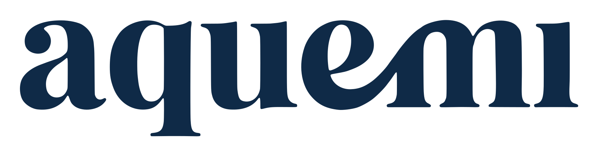
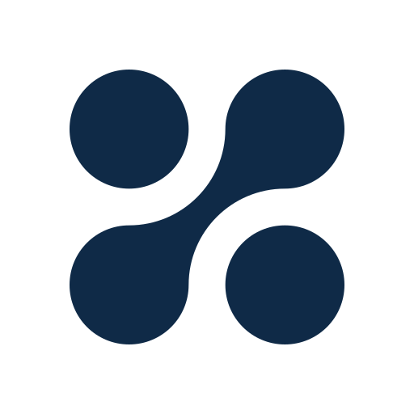

Precise, quiet, finished.
Aquemi designs and fabricates clean water systems for pharmaceutical manufacturing. The people we talk to are engineers, validation leads and quality managers who read specifications closely and answer to auditors. The brand should feel like the equipment: nothing extra.
Precision over persuasion
Show the number, the standard and the method. Let the specification make the case.
Space is a material
Generous white space, few elements, square edges. A page should read like a clean room looks.
One flowing line
The swash from e into m is the single expressive gesture. Use it through the logo and the arc motif only.
Logo, mark and lockup
Three parts: the lowercase wordmark, the four-dot mark, and the lockup that pairs them. Use the supplied files; never redraw, recolour or re-letter them.






- Clear space equal to the height of the a around the wordmark and lockup; half the mark's width around the mark.
- Placement: top left in navigation at 112 px (wordmark) or 152 px (lockup); bottom left in the footer at 160 px.
- Don't stretch, outline, shadow, rotate or place the logo on
flowor a busy image.
Mostly neutral, one accent
Navy carries the brand, Limestone softens it, Flow Blue is the only accent. Each swatch shows the light value on the left and the dark-theme value on the right.
Share of a typical page: surfaces about 70% · navy and actions 20% · limestone 8% · flow 2% or less.
Loading tokens…
- Set text in
ink;ink-mutedfor secondary copy;ink-subtlefor metadata on surface and surface-raised only. - Use
flowas a line or a word: links, chart lines, one highlighted figure. Never a large fill, never a button. - Status colours appear only in data and always with a word or icon.
- No gradients, no tinted shadows, no colour outside these tokens.
Read in Geist, measure in Geist Mono
Headlines run light and tightly tracked; size and space make the hierarchy, not bold. 500 is the heaviest weight, for h3 and label only. Every measurement is set in mono with tabular figures.
Spacing, radius, layout
A 12-column grid, 1280 px wide, 24 px gutters. Section padding 96 px on desktop, 64 px on phones. Corners are square by default.
Components
Five components from the design system. Class names are the contract; all values come from the tokens.
Button
One primary per screen region. Labels are sentence-case verbs, two to four words. Height 44 px.
<a class="aq-btn aq-btn--primary" href="…">Request a proposal <span class="aq-btn__arrow">→</span></a> <button class="aq-btn aq-btn--secondary" type="button">Download datasheet</button> <a class="aq-btn aq-btn--link" href="…">Explore systems <span class="aq-btn__arrow">→</span></a>
Navigation bar
Logo left, six sections, one call to action. Below 860 px the links collapse into a menu toggle and the wordmark replaces the lockup.
Specification table
Parameter, value in mono with its unit, then the method or pharmacopoeia reference. Highlight at most one row. Status always carries its word.
| Parameter | Limit | Example result | Method | Status |
|---|---|---|---|---|
| Conductivity | ≤ 1.3 µS/cm @ 25 °C | 0.62 µS/cm | USP <645> stage 1 | ✓ Pass |
| Total organic carbon | ≤ 500 ppb | 48 ppb | USP <643> | ✓ Pass |
| Bacterial endotoxins | < 0.25 EU/mL | < 0.05 EU/mL | USP <85> | ✓ Pass |
| Microbial count | ≤ 10 CFU/100 mL | 6 CFU/100 mL | USP <1231> | ! Alert |
<div class="aq-scroll"><table class="aq-spec">
<caption>Water for Injection · USP / Ph. Eur.</caption>
<thead><tr><th>Parameter</th><th>Limit</th><th>Method</th></tr></thead>
<tbody><tr class="is-highlight"><th scope="row">Bacterial endotoxins</th>
<td class="aq-spec__value">< 0.25 EU/mL</td><td class="aq-spec__method">USP <85></td></tr></tbody>
</table></div>Standard tag
Names the code a system is built to, exactly as published. The only pill shape in the system. List only standards a system genuinely meets.
<div class="aq-tags"><span class="aq-tag">ASME BPE</span><span class="aq-tag">GAMP 5</span></div>
Text field
Label above, help below. Units sit inside the field in mono. Errors say what to enter, not just that something is wrong.
Peak demand at points of use.
Enter a temperature between 4 and 95 °C.
<div class="aq-field"> <label class="aq-field__label" for="cap">Required capacity</label> <div class="aq-field__suffix"><input class="aq-field__input" id="cap" inputmode="numeric"><span class="aq-field__unit">L/h</span></div> <p class="aq-field__help">Peak demand at points of use.</p> </div>
Page blocks
Every page on the site is a hero, a list of blocks and a closing band. Each example below is a real block taken from the site's content, rendered by the same code the site uses. Open the JSON to see its shape.
Loading blocks…
Write like a senior process engineer
Plain, exact and confident without selling. We for Aquemi, you for the client. Lead with the outcome, then the evidence, and name the standard every time a claim depends on one.
| Write | Not |
|---|---|
| Every skid is factory acceptance tested before it ships. | Our rigorous quality processes ensure excellence. |
| Hot water sanitization at 80 °C, no chemicals in the loop. | Cutting-edge sanitization technology. |
| Validation documents follow GAMP 5 and arrive with the equipment. | Seamless validation support! |
| Conductivity holds below 1.1 µS/cm at 25 °C across the loop. | Industry-leading water quality. |
- Sentence case for every heading, button and nav item. Uppercase only in the eyebrow style.
- Units: a space between number and unit (80 °C, 1.1 µS/cm, 500 ppb TOC). SI units; imperial in brackets only on US-facing documents.
- Abbreviations: spell out on first use per page, then abbreviate: Water for Injection (WFI), Purified Water (PW), Clean-in-place (CIP).
- Never write revolutionary, world-class, cutting-edge, best-in-class, seamless or solutions-driven. No emoji, no exclamation marks.
- Placeholders: on this draft, any fact only Aquemi can supply is written in [square brackets] until it is confirmed. Never publish an invented figure.
Imagery and motion
The work itself
Electropolished 316L, orbital welds, sanitary valves, skids on the shop floor, installed loops. Cool, even light; true whites. Avoid lab-coat stock, splashing water, glowing molecules, globes and handshakes.
Steady flow
200 ms for controls, 400–600 ms for section reveals, ease cubic-bezier(0.2, 0, 0, 1). Fade and move at most 16 px. Respect reduced motion.
Visible focus
A 2 px focus ring in focus with a 2 px offset on every interactive element. Primary hover shifts to action-hover; links underline on hover.
Interface icons: none supplied yet. Until they are, use Lucide at a 1.5 px stroke, 20 px, coloured ink or ink-muted. Process diagrams use ISA-5.1 / P&ID symbols.
Source of truth: the Aquemi design system. Copies in this repo: design/tokens.json, design/brand-book.md, design/website.md. Styles: assets/aquemi.css.